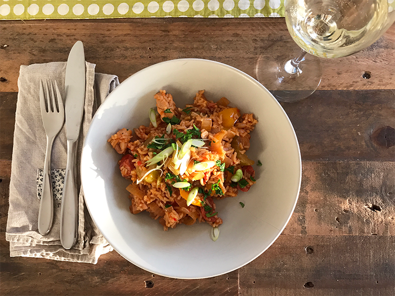
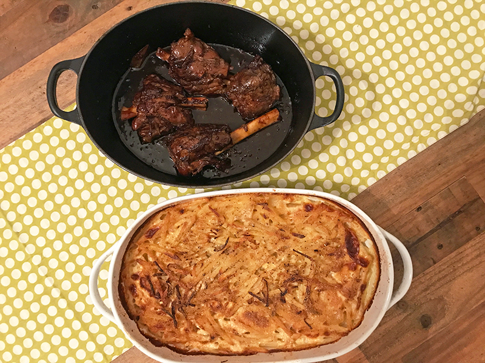

Toggle navigation
Home
Food Hacks
Recipes
Favourite Produce
About
Contact

Chicken Jambalaya
This spicy Cajun one pot dish with chorizo, chicken, rice works in all seasons but is particularly good on a cold winter's night.

Swedish Lamb Shanks with Jansson's Temptation
This spicy Cajun one pot dish with chorizo, chicken, rice works in all seasons but is particularly good on a cold winter's night.
Hannah's Meatloaf with Slaw & Wedges
Quintessential Americana food. This a delicious and simple dish for hungry families.
Penne with Chicken in Pesto Cream Sauce
This spicy Cajun one pot dish with chorizo, chicken, rice works in all seasons but is particularly good on a cold winter's night.
Mum's Swedish Lamb Shanks with Jansson's Temptation
This spicy Cajun one pot dish with chorizo, chicken, rice works in all seasons but is particularly good on a cold winter's night.